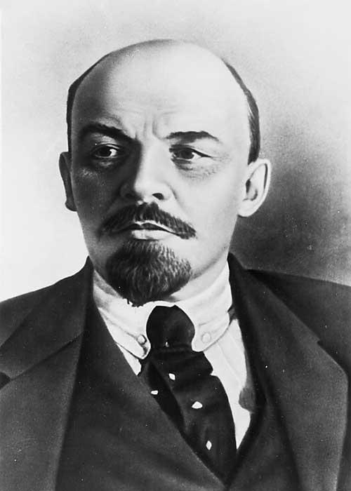
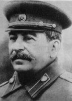

15) Savaşlar-Arası Dönem (II) Avrupa Kendi Yıkımını Hazırlıyor
“Gelişmiş ülkelerde dinin etkisinin azalması ve nihayetinde yok olması büyük bir boşluğun ortaya çıkmasına neden olacaktı. Modern zamanların tarihi, büyük ölçüde, bu boşluğun nasıl doldurulduğunun tarihidir… Dini inançların yerini laik ideoloji alacaktı. Eskiden totaliter ruhban sınıfının içindekiler artık totaliter siyasetçiler olarak sahneye çıkacaklardı… Egemen olma isteği, herhangi bir dini yaptırım tarafından engellenmemiş, insan ırkını kontrol etmek için bitmek bilmez bir iştaha sahip olan yeni bir çeşit ‘Mesih’ oluşturacaktı” (1996:48).
Paul Johnson
vrupa’daki savaşlar arası dönem, Kuzey Amerikalılar’ın önce aşırı coşkulu, sonra uslanan yaşantılarından çok daha farklıydı. Bu dönem boyunca Marksizm ve Faşizm pek çok Avrupalı için laik inançlar haline geldi. Kilisenin toplum üzerindeki etkisi öyle önemsiz bir hale geldi ki, ne Anglikan Kilisesi, ne Lutherci ne Almanya’nın Katolik Kilisesi, ne de Rus Ortodoks Kilisesi kıtaya yaklaşmakta olan felaketi engelleyebildi. Tuz tadını yitirmişti (bkz. İncil, Matta 5:13).
Daha önce de ele aldığımız gibi, görünen ahlakın Hristiyan etiği ile hiçbir ilişkisi olmadığı dönemlerde, 1. Dünya Savaşı bu çağa son verdi. İngiliz entelektüelleri (özellikle “Bloomsbury Grubu”) muhafazakâr din ve ahlakla alay ettiler. Anglikan Kilisesi, 1. Dünya Savaşı sırasında vatansever olmayan tutumu nedeniyle gerçekte, güvenilirliğini büyük ölçüde yitirmişti. Ruhban sınıfından bazıları, “barış ve merhamet” ilkeleri nedeniyle komünizmi kabul etmişlerdi. Diğerleri İngiliz bayrağını kiliselerinde bulundurmayı reddettiler. Çünkü bayrak “Britanya imparatorluğunun acımasız sömürüsünü simgeliyordu”. Anglikan papazları, Katolik mukabilleri tarafından “siper hizmetinde” yetersiz çıktı. Canterbury başepiskoposu ve savaşlar arası dönemdeki Britanya’nın en etkili papazı William Temple’a göre, Hristiyan ahlakı, toplumsal sorunlara ekonomik çözümler bulmayı amaçlayan siyasi bir gündemde yansıtılmalıydı. Hristiyanlığın ekonomi ile harmanlaması, geleneksel ekonomik görüşlerin varlıklı kesimin, yoksullara göstermeleri gereken suçluluk güdümlü yükümlülük duygusuna dönüşmesine neden oldu. Temple ve yandaşları daha pek çok “siyasi anlamda ilerici” agnostik tarafından destekleniyordu. İngiliz Hristiyanlığı, Kutsal Kitap’a uygun Hristiyanlığın özünde, iyi işlerin Tanrı ile doğru ilişkiden doğal olarak kaynaklandığını öğreten toplumsal etki siyasi bir harekete dönüşüyordu.
Bu arada, Rusya’da 20. yüzyılın en önemli olaylarından biri gerçekleşmişti: Sovyetler Birliği’nin kuruluşu. Sovyetler Birliği, Lenin’in Bolşevik Partisi’nin, Sovyetler Kongresinde yetki sahibi olduğu 7 Kasım 1917’de kurulmuştur (Partinin ömrü 26 Aralık 1991’de son bulmuştur). Bunun bir nedeni, Bolşevizm’in (1918’de Komünizm olarak yeniden adlandırılmıştır), Vladimir Ilyich Lenin ve Leon Trotsky iyi önderliği, azmi, ve organizasyonu sayesinde zafer kazanması, diğer nedeni ise Çarlık düşmanlarının savaştan dolayı bitkin olmaları ve uyumsuzluklarıydı. Üçüncü bir neden de terördü:
Lenin, bireysel suçluluk görüşünü, bütün Yahudi-Hristiyan kişisel sorumluluk etiği ile beraber reddetti… Lenin’in, devletin birimlerini “Rusya’yı bütün zararlı böceklerden arındırmaya” çağırdığı, Ocak 1918 tarihli kararnamesi bir dönüm noktasıdır. Lenin bireysel suçluluk görüşünü reddettiğinde ve bütün sınıfları yok etmeye başladığında, bu ölümcül ilkenin aşamayacağı engel kalmamıştı. Bütün zümreler ‘düşmanlar’ olarak sınıflandırılarak yalnızca soylarına veya, esasen milliyetlerine göre hapse veya ölüm cezasına mahkum edilemez miydi?… Böylece soykırımın çağdaş uygulaması ortaya çıkmış oldu (Johnson 1996:70-71).
Geçmişte, mutlak monarşiler-de bile, yönetimin gücü, toplumdaki kilise, aristokrasi, kentli burjuvazi, eskiden yapılan antlaşmalar, mahkemeler, meclis-ler ve benzeri güçler tarafından sınırlandırılmışlardır. Ayrıca, dışsal, sınırlandırıcı güç fikri, Tanrı, Doğa Kanunu, veya mutlak ahlak sistemi kavramında her zaman var olmuştur. Lenin’in ideal devlet düzeninde bu gibi dengeleyici unsurlar tamamen yok edilmişlerdi. Her şey, çok küçük bir grup insanın, gücü ellerinde tuttuğu, daima gelişen devlet tarafından kontrol edilir veya sahiplenilirdi.
Lenin’in vaktinden önce (1924’te) ölmesiyle, partide Leon Trotsky ve Joseph Stalin arasında kimin üstün geleceği ile ilgili güç savaşı başladı. Trotsky, bilgili ve yetenekli bir askeri liderdi fakat Stalin parti birimlerini idare ettiği için, desteğin çoğunluğunu kazandı.
Stalin, Sovyetler Birliği’ni, tarımsal durgunluk durumundan çıkararak, endüstriyel güce doğru ilerletmeyi amaçlayan beş yıllık planlarının ilkini 1928’de uygulamaya soktu. New York borsasının iflasından birkaç ay sonra, Rus köylülerinin zorla ortaklaştırılmasını emretti. Böylece toplumsal düzenleme ile ilgili olarak tarihin en masraflı, en büyük başarısızlıklarından birine girişti. Bu uygulama, Wall Street’in neden olduğu maddi kayıptan daha fazlasını yarattı. Kendisinden önce veya sonraki despotların dönemindekilerin-den daha fazla vatandaş mahvolmuştu. Beş milyon köylü yok oldu. Bu sayının yaklaşık iki katı da işçi kamplarında zorla çalıştırıldı. Stalin’in 25 yıllık yönetimi, günümüzde en çok Rus köylülerinin katledilmesi ve onların Komünist Partisi ile polis üzerindeki kontrolü için tehdit unsuru oldukları gerekçesiyle tasfiye edilmesiyle bilinir. Böylesine bir katliamı hangi ideoloji ve nasıl bir mantık haklı çıkarabilir?
Gerçekte bu olayların nedeninde belirli bir mantık yatıyordu. Sosyalizme doğru yol almakta olan devletler ilerleme göstermeden, statik bir şekilde duramazlar. İnsanoğlunun ticaret ve takas yapma içgüdüsü tekrar kendisini belli eder. Ve böylece kapitalizm, yeni oluşturulan toplumcu devletin çöküşünün habercisi olarak, yeniden ortaya çıkar. Başka bir deyişle, sosyalizme doğru ilerlemeyi amaçlayan tarımsal bir toplumun, işçi sınıfını oluşturmak için, büyük ölçekli sanayileşme ile ilerlemeye devam etmesi gerekir. Fakat, işçilerin beslenmesi için gerekli gıda fazlası üretilmeden sanayileşmede başarı elde edilemez. Sermaye yatırımına gereken paranın toplanabilmesi için ihracat yapılması da zorunludur. Bu gıda fazlasını da ancak köylüler üretebilirdi. Bunu kendi rızalarıyla yapmadıkları için, zorla yaptırılmaları gerekti. Stalin’in, kendi sosyalizm görüşünü gerçekleştirme çabası Rusya’nın bağımsız köylü sınıfını yok edecek kadar acımasızdı.
Batı, Stalin’in zorbalığını genellikle ya gözardı ediyor ya da haklı çıkarıyordu. O dönemde Rusya’ya gelenlerin çoğu, ya başlıca amaçları ticaret olan ve kendilerini ilgilendirmeyen konulara karışmayan iş adamları, veya Stalin’in başarılarını takdir eden entelektüellerdi. Örneğin, George Bernhard Shaw, bu konuda şöyle yazmıştır: “Britanya’da bir kişi, normal bir insan olarak hapishaneye girer, bir çeşit suçluya dönüşür, Rusya’da bir suçlu olarak hapse girmiş olanlar, normal insana dönüşürler, hatta dışarı çıkmaları için ikna edilmeleri gerekir” (alıntı, Johnson 1996:275).
Batılı aydınların Stalin’in suçunu takdir etmesi nasıl açıklanabilir? Bu nedenlerden biri tamamen kendilerini aldatmalarıydı. İnsanlar Sovyet tecrübesinin yeni bir çağ açacağına inanmak istediler. Bütün olup bitene rağmen bunu onaylamaya karar verdiler. Gerçekleri bile bile yanlış tanıtarak daha büyük bir amaca hizmet ettiklerini düşünenler de kasten yalan söylüyorlardı. 1. Dünya Savaşı’nın ve Büyük Krizin yol açtığı zarara karşı, Batılı entelektüeller –Hristiyanlığın tek seçenek olmadığı– sınırlı sayıdaki kötü seçenekler arasında seçim yapmaları gerektiğini düşündüler. Seçimi bir kez yaptıklarında da ne pahasına olursa olsun ona bağlı kalmalıyorlar. Bu arada, Avrupa’nın geri kalan kısmında, başka bir kötülük kendini göstermişti: Sami-karşıtı.
“Sami” sözcüğü aslen, hem Yahudiler’in hem de Araplar’ın torunu olduğu söylenen Nuh’un oğlu Sam’ın soyundan gelenler ile ilgili olsa da, “Sami-karşıtı” sözcüğü yalnızca Yahudiler’e karşı düşmanlığı ifade eder olmuştur. Sami-karşıtlığını (ya da Yahudi aleytarlığını) açıklamaya çalışan pek çok kuram vardır; en belirgin olanı da, sıkıntı döneminde insanların bir günah keçisi aramalarıdır. Kendi dini ve sosyal yapılarına tutunan, küçük, yanlış anlaşılmış azınlık olan Avrupa Yahudiler’i, yanlış yere yönlendirilen öfke veya engelleme için kolay hedef haline geldiler. 3. veya 4. yüzyıldan itibaren, Mesih’i öldürmekle suçlanıyorlardı, kilisenin faaliyet alanı genişledikçe ve etkisi arttıkça, “Sami-karşıtlığı” da yayıldı (fakat bu sözcük 19. yüzyılın sonunda türetilmiştir). Pek çok Yahudi, Haçlı Seferleri sırasında katledilmişti. Pek çok Avrupa ülkesinde belirleyici işaretler taşıyarak gettolarda yaşamaya zorlanmışlardı. Bununla beraber ekonomik faaliyet alanları da kısıtlanmıştı. Modern ulus devletinin ortaya çıkışına kadar, Fransız İhtilali, kilise ve devletin birbirinden ayrılması, yasalaştırılan, din ayrımcılığını sona erdiren reformlardı. Tüm bunlar, Yahudiler’in Batı Avrupa’da toplum içine karışmalarını sağlamıştır. Fakat o zamanda bile, dönemin sosyal ve ekonomik durumlarına göre artan veya azalan, kökleşmiş düşmanlıklara karşı mücadele etmekteydiler. Fransa’da yaşanan Dreyfus Olayı bunun bir örneğidir.
Doğu Avrupa, reformun ve devrimin özgürlük getiren yönlerinden yeterince yararlanmadı. Bu nedenle Yahudiler sıkıntı çekmeye devam ettiler. Gerçekte, Yahudiler’in yasal olarak özgürleşmeleri, Doğu Avrupa’nın büyük bölümünde 20. yüzyıla kadar tam anlamıyla gerçekleşmemişti. Yahudiler sistematik olarak ayırt edici kanunlarla değerlendiriliyorlardı ve yanlış bilgilerle haklı çıkarılan, devlet onaylı katliamlara yani soykırımlara maruz kaldılar. Hoşnutsuz işçileri ve köylüleri sakinleştirmek için kullanıldılar. Komünizm dönemi kısmen daha iyiydi.
Birleşmiş Devletler de, Sami-karşıtlığından nasibini almıştı. 1. Dünya Savaşı’ndan sonra Rus Sami-karşıtı propagandasıyla beslenerek, pek çok Roma Katoliği ve Afrikalı Amerikalı tarafından benimsenmişti. Henry Ford bile bu görüşü benimseyenler arasındaydı. Kendi gazetesi, Dearborn Independent, soykırımları haklı göstermek için kullanılan bir Rus propagandası olan iftira niteliğindeki Protocols of the Elders of Zion’u (Siyon’un Liderlerinin Protokolleri kitabını) yeniden bastı (Ford daha sonra özür dilemişti). Amerika’nın savaşlar arası dönemdeki göç kanunları da Sami-karşıtı olarak anlaşıldı. Çünkü, en katı yaptırımlar çok fazla Yahudi’nin yaşadığı Doğu Avrupa milletlerine uygulanıyordu. İş alanlarında, toplumda Yahudiler’in zenginlerin yaşadığı yerlere gitmelerine veya zenginlerin eğlence yerlerini kullanmalarına karşı çıkılması, yükseköğrenim kurumlarına kayıt yaptırabilen veya bu kurumlarca kabul edilen Yahudiler’e yaptırım uygulanması olağan sayılıyordu. Fakat bunların hiçbiri, Almanya’nın yaptığı zorlu ve sistematik Sami-karşıtlığı ile mukayese edilemezdi.
Alman Sami-karşıtlığı, mitolojiyi ve Alman Volk’unun” (halkının) “ruhunu” tanımlamak için ülkenin ormanlarında ortaya çıkan efsaneleri vurgulayan romantik-kültürel bir hareket üzerinde kökleşmişti. Özünü köylülerin ve zanaatçıların oluşturduğu Volk’u ülke belirliyordu. Volk’u “proletaryanın” hakim olduğu, vatanlarından kopup gelen insanlardan oluşan kozmopolit şehirler tehdit ediyordu. Proletarya ise vatansız bir halk olan Yahudiler tarafından oluşturuluyor ve yönetiliyordu (köksüz, yani “ruhsuz” bir halk). Bu ideolojiye göre, Yahudiler şehirleri yöneterek, “bir dünya burjuvazisi” kurarak, dünya proletaryası ile hem “doğal” hem de “ruha” sahip olan her şeyi yok etmeyi amaçladılar. Yabancı düşmanlığı güden bir Volk hareketi uzun süredir vardı. Bu durum kendi edebiyat türünü ortaya çıkırdı. En bilinen eser de Hermon Lon’un Der Wehrwolf’u (1910) adlı Sami-karşıtı “köylü” romanlarının oluşmasıydı.
Bu sırada 1. Dünya savaşı çıkmıştı. Savaş sırasında, Almanya’nın vatansever basını, Almanya’nın yenilgisinin, ülkeyi içine çeken “çökmüş” Batı sanatı, edebiyat ve felsefe selinin ortaya çıkmasına neden olacağını tahmin ediyordu. Yenilgi gerçekleştiğinde, günah keçisi, Volk arasında “yabancı bir hain” aranmaya başlandı. Yahudiler bu rol için en uygunuydu. Batı’nın kendisinden istifade ettiği Weimar Cumhuriyeti, Almanya’nın muhafazakâr doğu kesimince, hem Bolşevikler, hem de uluslararası kapitalizm tarafından yönetilen bir Judenrepublik (Yahudi Cumhuriyeti) olarak görüldü ve reddedildi. Savaşlar arası dönemde Weimar Cumhuriyeti, kısa süre içerisinde, muhafazakâr Doğulularla liberal, kentleşmiş Batı arasında, kültürel bir savaş alanı haline geldi. “Erdemli” Almanya kültürünü destekleyen Alman gelenekçileri, “Modernist çöküşçülerle” mücadele içerisindelerdi. Weimar Cumhuriyeti’nin “çökmüş” kültürü çekmesinin bir nedeni, Avrupa’daki en gevşek sansür kurallarına sahip olmasıydı. Paris’te basılamayan veya gösterilemeyen filmler, oyunlar, romanlar, sahne ve gece kulübü şovlarını Berlin’de görmek mümkündü. Cinsel anlamda sapkın olan konular ve Freud’un yazıları “aydınlar” arasında çok modaydı ki bu, muhafazakâr doğuluların en kötü korkularını haklı çıkarıyordu.
Yahudiler, hem Rus, hem de Alman Komünist partilerinin kurulmasında önemli bir yere sahip olsalar da, bu kurumlar kitle partilerine dönüştüklerinde, büyük ölçü de her ikisinin de dışında bırakılmışlardı. Yahudiler, savaşlar arasındaki dönemde, özellikle finans dünyasında ve sanayide de önemli bir yere sahip değillerdi. Weimar Cumhuriyeti’nin kuruluşunda aktif bir rol oynamışlardı, fakat önemli bir makama sahip olan tek kişi Walther Rathenau da öldürülmüştü. Yahudiler siyaset ve ekonomi dünyasına hakim olmasalar da kültür aleminde yüksek bir profile sahiptiler. Pek çok önemli eleştirmen, yayımcı, sanatçı, yazar, film yönetmeni, oyun yazarları ve diğer düşünce adamları Yahudiydi. Eğlence dünyasında ve tiyatro eleştirisinde çok önemli bir yere sahiplerdi. Başlıca sanat galerilerini Yahudiler işletiyorlardı, Frankfurter Zeitung ve Bas Berliner Tagblatt gibi önemli gazetelerin sahibiydiler. Neredeyse yayımcılık ve büyük mağazalar sektörüne de hakim olacaklardı. Kendilerine çok faydası dokunan Yahudiler olmasaydı, Weimar kültürü oldukça zayıf düşerdi. Fakat şüpheci ve tedirgin Doğulular bunu bu şekilde göremediler. Yapılan kültürel katkıyı “Yahudi kültür komplosunun” bir kanıtı olarak yorumladılar.
Bu sorun 1. Dünya Savaşı’yla daha kötü bir hale gelmişti. Çünkü, savaş tedirgini olan Yahudi kitlelerini Rusya’dan, Polonya’dan ve farklı yerlerden Almanya’ya götürmüş, böylece “Volk’u seyreltmişti”. Yahudiler, “çözüm” gerektiren “sorun” haline gelmişlerdi. Süreli Sami-karşıtı yayınlar milyonlara ulaşıyordu. Bu yayınlar, Yahudiler’den çift vergi alınması, getto düzenine dönülmesi, ihlal eden Yahudiler’in ölüm cezasına mahkum edildiği özel kanunların çıkarılması, Aryan Almanları ile Yahudiler arasındaki evliliklerin yasaklanması, hatta Yahudiler’in öldürülmesi için olan talebi daha da artırıyordu. Şiddet içeren olaylar daha sık yaşanır oldu. Bunalımın ciddiyeti daha da arttı ve böylece bu sorunun üstesinden gelinebilmesi için olağanüstü bir çözüme ihtiyaç duyuldu.
Hem Alman, hem de uluslararası endüstriyel üretim 1929’dan sonra büyük ölçüde yavaşladı. Almanya’nın dış ticareti hızla geriledi, işsizlik önemli ölçüde arttı ve tarım fiyatları da hızla düştü. Kriz daha da büyüdükçe, durum bir devrim için hazır hale geldi. Hitler’in ortaya çıkma zamanı gelmişti. Başlıca kapitalistler, Hitler’in Milliyetçi Sosyalist (Nazi) partisine büyük miktarda paralar yatırmışlardı, iflaslardan, işsizlerden ve hayal kırıklığına uğramış olanlardan gelen destek partinin hızlı büyümesine neden oldu.
1930 seçimlerinde Naziler, Sosyal Demokratlar’dan sonra Reichstag’da (Parlamento) ikinci büyük parti oldular. 1932’nin başkanlık seçimleri sırasında Hitler yine muazzam bir oy çoğunluğuna sahip oldu. 30 Ocak 1933’te Başkan Paul von Hindenburg, Hitler’i Reichskanzler (başbakan) olarak atadı. Bu, Hitler’in kendi Milliyetçi Sosyalist devlet görüşünü oluşturmasına olanak sağladı. Reichstag (Parlamento) binasında çıkan bir yangını bahane ederek Komünist ve Sosyal Demokrat partileri acımasızca bastırdı (her ikisi de herhangi bir şekilde direnmedi). Yeni partilerin kurulması da dahil olmak üzere, diğer bütün partileri yasadışı ilan etti. Artık Naziler tek “yasal” partiydi ve 23 Mart 1933 Yetki Yasası’yla, Reichstag’ın yasama gücü bakanlar kuruluna geçti. Bu yasa Hitler’e diktatörce güçler vermişti ve Weimar Cumhuriyeti’nin sonunun geldiğine işaret ediyordu. 1 Aralık 1933’te yasalaştırılan bir kanun, Nazi Partisi’nin “ayrılmaz bir şekilde devlete dahil olduğunu” ifade etti; Hitler çok geçmeden bütün anayasal ve sivil hakları fes etmişti.
1933 senesinden 1935’e kadar neredeyse bütün demokratik yapıların yerini merkezi bir devlet almıştı. Taşra yönetimleri özerkliklerini kaybettiler; ticaret, eğitim veya kültür ile ilgili olsalar bile özel kurumlar, partinin yönetimine tabi tutuldular. Nazi öğretisi, Lutherci kilisenin içine bile sızmıştı.
Hitler’in ekonomik “Yeni Düzenine” dört banka, Krupp savaş gereçleri ve çelik imalathanesi, boya, sentetik lastik, yağ ve daha pek çok şey üreten I.G. Farbern gibi birkaç büyük şirket grubu hükmediyordu. Bu karteller, nihayetinde milyonlarca savaş suçlusundan ve fethedilen ülkelerden getirilen kölelerden istifade edilmesini öngörüyordu.
Bu “Yeni Düzen” işsizliği ortadan kaldırdı ve Alman işçilerine ve çiftçilerine orta dereceli bir yaşam standardı sağladı. Ayrıca güç sahibi seçkin sınıfını da zenginleştirdi. Nazilerin “mükemmel bir Almanya’yı” oluşturmak için kullandıkları ve Müttefiklerin kararsızlığının ardından, 2. Dünya Savaşı’nın çıkmasına neden olan korkunç bir savaş mekanizmasını yarattı. 1936’da Almanlar, Rheineland’ı yeniden askerileştirdiler. 1936-39’da, İspanya İç Savaşı’nda Franco’yu destekleyerek askeri yeteneklerini geliştirdiler. 1938’de Avusturya’nın Anschluss’unu ilhak ettiler. 1939’da Çekoslovakya’yı talan ettiler ve Sovyetler Birliğiyle, gizli bir Polonya bölünme sözleşmesini de içeren, bir saldırmazlık antlaşması yaptılar. Naziler 1 Eylül 1939’da Polonya’ya saldırdıklarında, İngiltere, taviz verme politikasının sonucunda Nazi’lerin egemenliğinde bir Avrupa’nın oluşacağının farkına vardı. 2. Dünya Savaşı başlamıştı.
Savaşlar arasındaki dönemde, Almanya’daki Sami-karşıtı duyguları günümüzde hayal etmek bile zordur. Daha önce de değindiğimiz gibi, Sami-karşıtlığı Hitler öncesine dayanıyordu; Hitler yalnızca, çoğunluğun arzu ettiği sonu gerçekleştirmek için gerekli araçları sağladı. Hitler aslında, kendisinin ırkçı hedeflerini gerçekleştirmek amacıyla, Almanların “ahlaki doğalarına” çağrıda bulunuyordu. Aryan ırkına hizmet etmek (Marx’ın proletaryasına hizmet etmeye karşı) Nazi “ahlakının” temelini oluşturuyordu.
Naziler, Sami-karşıtlığını; nefret yüklü bir ırkçılık ve Yahudiler’in çelişkili bir şekilde hem dünya kapitalizmiyle, hem de dünya komünizmiyle özdeşleştirilmesinden oluşan büyük bir propaganda seferberliği vasıtasıyla, daha da yüksek bir düzeye çıkarmayı amaçladılar. Fakat bu propaganda seferberliğinden daha da etkili olan şey, 1933 senesinde yetki sahibi olduklarında kabul ettirdikleri yasalardı. Yahudiler yasaların koruması dışında bırakılmış, mallarına el konulmuştu. İlk toplama kampları oluşturuldu. 1938’de Almanya’daki Yahudiler’e, ülke çapında yapılan bir saldırı, meşhur Kristallnacht (Kırık Cam Gecesi) ile ülke istila edildi. Sonraki bölümde ele alacağımız soykırımın gerçekleşmesi için bütün nedenler oluşturulmuştu.
* * * *
Otuzlu yılların ortalarına kadar, Almanya ve Rusya, Avrupa’nın en büyük ve güçlü ülkelerinden ikisi, totaliter rejimlere yenik düşmüşlerdi. Totalitarizm ahlaksal görecilik anlamına gelir, akla gelebilecek her türlü zalimliğe fırsat tanıyan bir etik “düzenidir”. Avrupa siyaset sahnesine hakim olan iki sistem, Nazizm ve Komünizm, her ikisi de kendini koruma ve kendi Ütopya biçimlerini gerçekleştirmek amacıyla diğerini, daha aşırı davranışlarda bulunması için kışkırttı. Hristiyan fikir birliğinin bozulması hayal edilemeyecek biçimde korkunç olayların yaşanmasına neden oldu.
Düşünün!